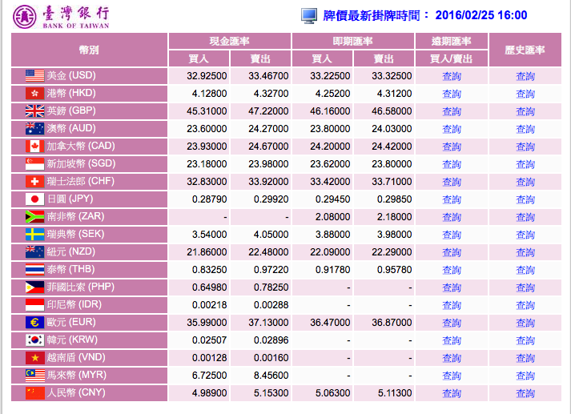
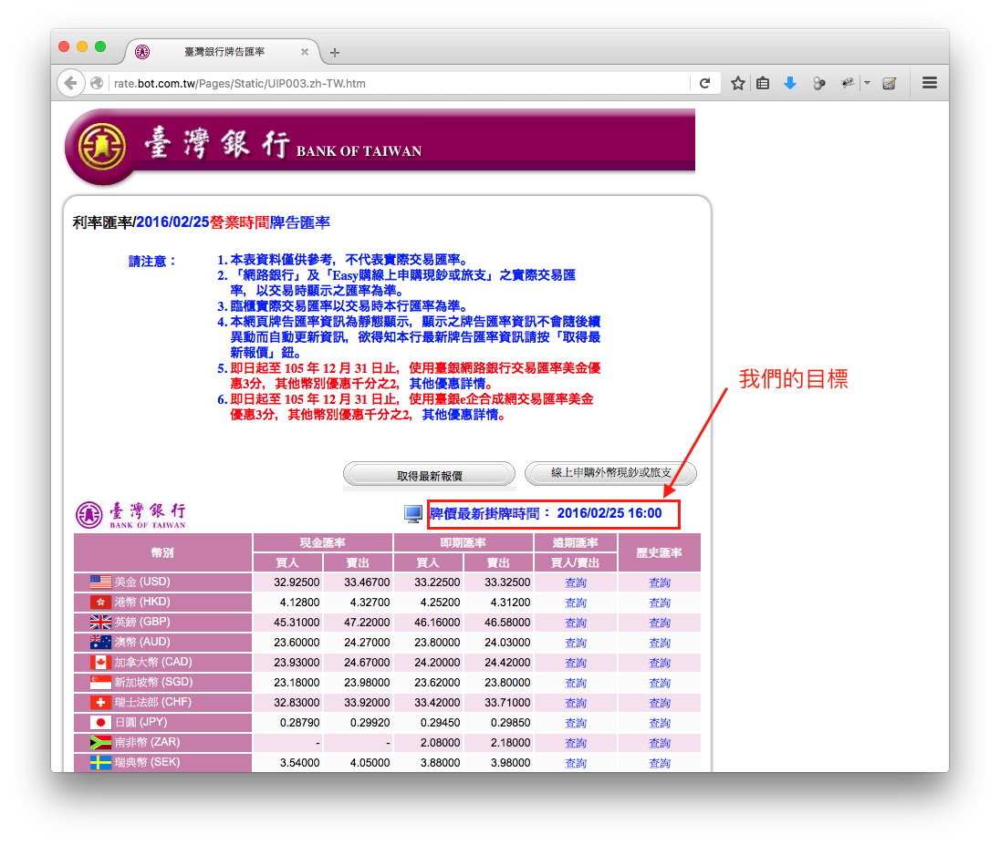
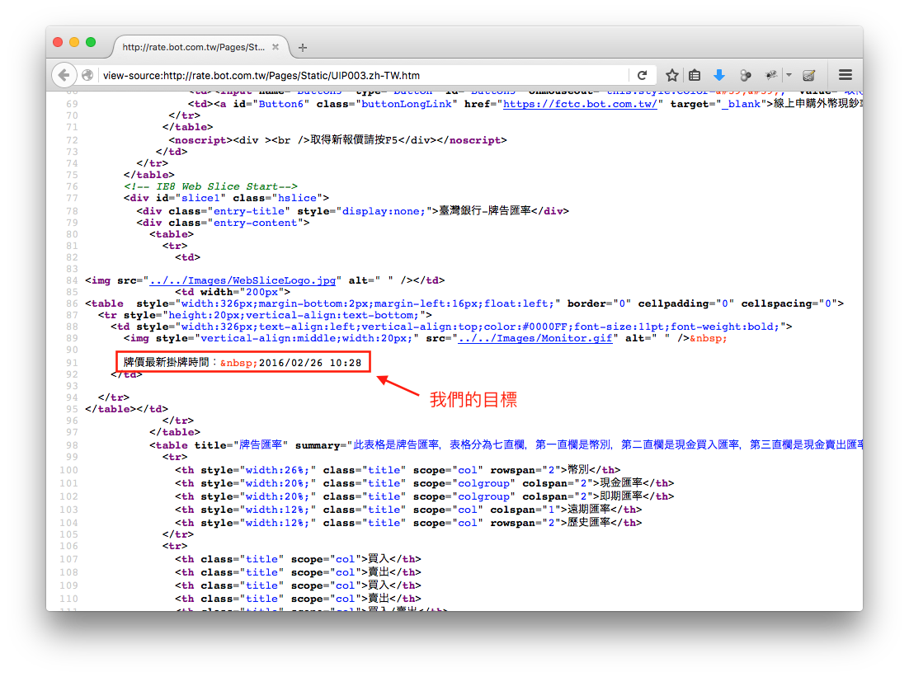
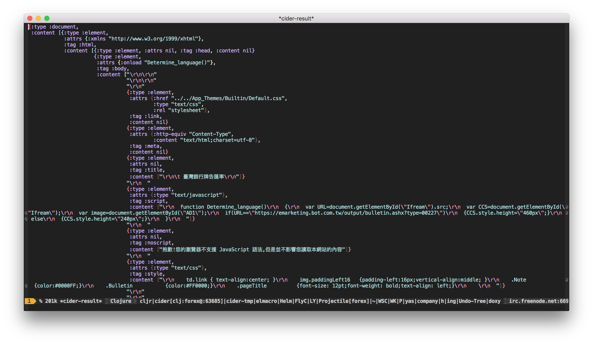
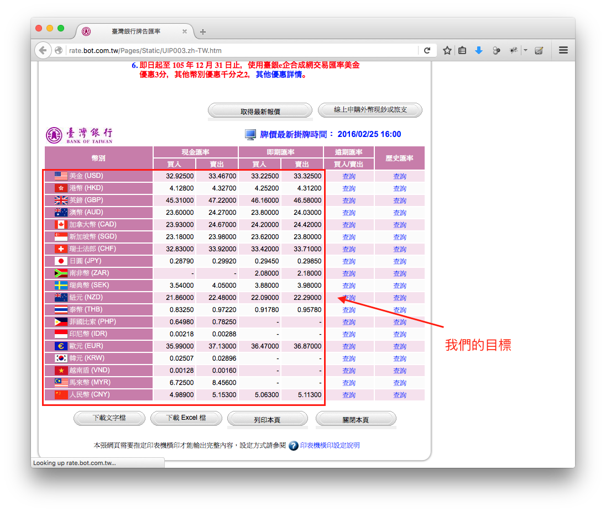
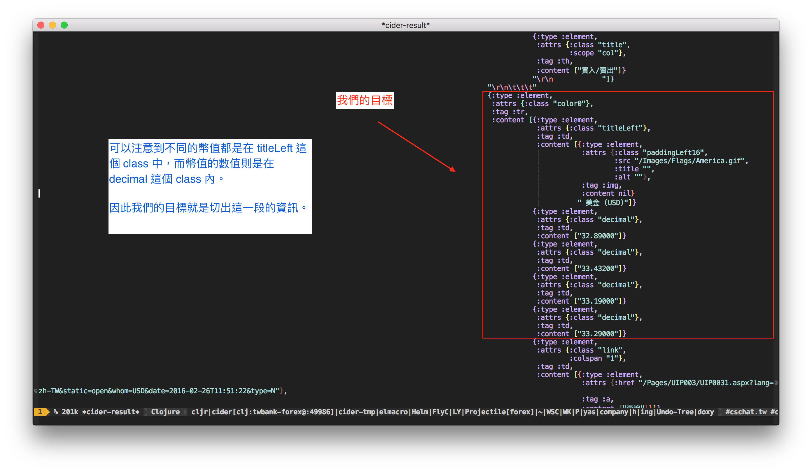

最近開始在看理財相關的資訊，畢竟錢一直存著也只是存著，剛好看到了 台灣銀行牌告匯率 的訊息，就讓我們用 Clojure 來寫一個 parser 將這個 HTML 網頁轉換成 Clojure 常用的 edn 格式吧。
本文將簡述如何透過 clj-http 取得 台灣銀行牌告匯率 資訊後，再使用 hickory 對取得網頁的資料進行處理，最後回傳 edn 格式好方便我們未來的 Clojure 程式可以對這些訊息進行處理。
設定我們的目標
在開始寫程式前，先來確立我們的目標。我們希望取得 台灣銀行牌告匯率 的資訊，並將下圖裡面的資料轉換成 Clojure 的 edn 格式。

因此最後我們希望可以得到這樣的結果:
{:url "http://rate.bot.com.tw/Pages/Static/UIP003.zh-TW.htm", :date "2016/02/25 16:00", :count 19, :results {:USD {:name "美金 (USD)", :cash-selling "32.92500", :cash-buying "33.46700", :spot-selling "33.22500", :spot-buying "33.32500"}, :EUR {:name "歐元 (EUR)", :cash-selling "35.99000", :cash-buying "37.13000", :spot-selling "36.47000", :spot-buying "36.87000"}, ;; skip ... :PHP {:name "菲國比索 (PHP)", :cash-selling "0.64980", :cash-buying "0.78250", :spot-selling "-", :spot-buying "-"}}}
建立我們的專案
首先我們先透過 leinigen 產生我們 Clojure 專案的基本樣板，這邊命名該專案為 twbank-forex
coldnew@Rosia ~ $ lein new twbank-forex
專案建立完成後，我們要稍微修改一下 project.clj 添加 hickory 以及 clj-http 這兩個函式庫。
(defproject twbank-forex "0.1.0-SNAPSHOT" ;; skip ... :dependencies [[org.clojure/clojure "1.8.0"] [hickory "0.6.0"] [clj-http "2.1.0"]] :main twbank-forex.core)
開始我們的程式
就讓我們來開始我們的專案吧，首先編輯 src/twbank_forex/core.clj 這個檔案，並添加一些我們需要的函式庫資訊:
(ns twbank-forex.core (:require [clj-http.client :as http] [hickory.core :as hickory] [hickory.select :as s] [clojure.string :as str]))
由於我們要分析的目標是 台灣銀行牌告匯率 這個網頁，因此先設立一個全域變數，其內容存放我們想要分析的網址
;; The webpage we want to parse (def ^:private twbank-url "http://rate.bot.com.tw/Pages/Static/UIP003.zh-TW.htm")
接著，讓我們一步一步來實作
取得網頁內容
我們的目的是下載 台灣銀行牌告匯率 網頁內容並進行解析，因此我們可以透過 clj-http 來處理這件事
(http/get twbank-url)
如果你的網路連得上我們的目標網址的話，你會得到如下的回應
{:status 200, :headers {"Server" "Microsoft-IIS/8.5", "Content-Type" "text/html", "Content-Length" "3664", "Connection" "close", "Accept-Ranges" "bytes", "ETag" "W/\"809337e3b70d11:0\"", "Date" "Fri, 26 Feb 2016 02:23:39 GMT", "Vary" "Accept-Encoding", "Last-Modified" "Fri, 26 Feb 2016 02:14:59 GMT", "X-Powered-By" "ASP.NET"}, :body "\r\n\r\n<!DOCTYPE html PUBLIC \"-//W3C//DTD XHTML 1.0 Transitional//EN\" \"http://www.w3.org/TR/xhtml1/DTD/xhtml1-transitional.dtd\">\r\n\r\n<html xmlns=\"http://www.w3.org/1999/xhtml\">\r\n<head><link href=\"../../App_Themes/Builtin/Default.css\" type=\"text/css\" rel=\"stylesheet\" /><meta http-equiv=\"Content-Type\" content=\"text/html;charset=utf-8\" /><title>\r\n\t 臺灣銀行牌告匯率\r\n</title>\r\n ", ;; skip .... :request-time 227, :trace-redirects ["http://rate.bot.com.tw/Pages/Static/UIP003.zh-TW.htm"], :orig-content-encoding "gzip", :cookies {"BankOfTaiwanCookie" {:discard false, :expires #inst "2016-02-26T05:23:42.000-00:00", :path "/", :secure false, :value "352626880.20480.0000", :version 0}}}
由上面的回應來看，我們可以發現網頁的 內容 是存放在 :body 裡面，而在本例中我們只需要取得網頁內容即可，因此可以這樣建立取得網頁內容的函式
(defn fetch-html [] (:body (http/get twbank-url)))
取得最新掛牌時間
取得網頁內容後，我們可以來查找這個網頁的掛牌時間，從網頁上來看就是這個

因此使用瀏覽器查看原始碼時，你可以找到這樣的訊息

也就是說，我們只要針對關鍵字 牌價最新掛牌時間 使用正規表達式來進行處理，就可以取得掛牌時間的資訊，針對此問題，我們可以透過 Clojure 的 re-find 來對目標進行切割
(re-find #"(.*牌價最新掛牌時間： )([\d\/]+\s[\d:]+)(.*)" "<td style=\"width:326px;text-align:left;vertical-align:top;color:#0000FF;font-size:11pt;font-weight:bold;\"> <img style=\"vertical-align:middle;width:20px;\" src=\"../../Images/Monitor.gif\" alt=\" \" /> 牌價最新掛牌時間： 2016/02/26 10:28 </td>") ;; => ;; [" 牌價最新掛牌時間： 2016/02/26 10:28" ;; " 牌價最新掛牌時間： " ;; "2016/02/26 10:28" ;; ""]
re-find 會依照你設定的正規表達式，將目標分成不同群組，得到的結果如上。也因此我們可以知道我們的目標會出現在結果的 index 2 (Clojure 陣列是從 0 開始計算)
最後，將這函式整理一下即可獲得
(defn parse-date [html] (nth (re-find #"(.*牌價最新掛牌時間： )([\d\/]+\s[\d:]+)(.*)" html) 2))
將網頁轉換成 hickory 格式
在本程式中我們將透過 hickory 來讓我們解析 HTML 更為簡單，hickory 是一個可用於 Clojure/ClojureScript 的函式庫，可以簡化我們解析 HTML 文件的麻煩，唯一的缺點是，由於目前 node.js 缺少了 DOM 元件，因此使用 hickory 寫出的 ClojureScript 是無法在 node.js 上執行的。
我們首先使用 hickory/parse 將 HTML 轉換成 DOM 結構
(hickory/parse "<b>TEST</b>") ;; => ;; #object[org.jsoup.nodes.Document ;; "0x13e4a71e" ;; "<html>\n <head></head>\n <body>\n <b>TEST</b>\n </body>\n</html>"]
接著再使用 hickory/as-hickory 將剛剛獲得的 DOM 結構轉換成 hickory 的資料格式，其形式如下
(hickory/as-hickory (hickory/parse "<b>TEST</b>")) ;; => ;; {:type :document, ;; :content [{:type :element, ;; :attrs nil, ;; :tag :html, ;; :content [{:type :element, :attrs nil, :tag :head, :content nil} ;; {:type :element, ;; :attrs nil, ;; :tag :body, ;; :content [{:type :element, ;; :attrs nil, ;; :tag :b, ;; :content ["TEST"]}]}]}]}
將上面資訊整理一下，最後我們的函式即為
(defn html->hickory [html] (->> html hickory/parse hickory/as-hickory))
如果將這函式作用於前面所獲得的 HTML 內容，可以看到我們取得了以下的資訊

取得匯率轉換的資訊
接下來就是這個程式的重頭戲了，以網頁來看，我們的目標就是這些匯率資訊

為了方便尋找，我們先針對 美金 (USD) 的部分查找我們透過前面函式將 HTML 轉換成 Hickory 格式後的結果

由於我們的目標是 titleLeft 以及 decimal 這兩種 class, 因此就直接使用 hickory.select/select 來幫我們將目標資訊切割出來
(let [data (-> (fetch-html) html->hickory)] (s/select (s/child (s/or (s/class "titleLeft") (s/class "decimal"))) data))
透過這種方式，我們得到以下的陣列資訊
[{:type :element, :attrs {:class "titleLeft"}, :tag :td, :content [{:type :element, :attrs {:class "paddingLeft16", :src "/Images/Flags/America.gif", :title "", :alt ""}, :tag :img, :content nil} " 美金 (USD)"]} {:type :element, :attrs {:class "decimal"}, :tag :td, :content ["32.89000"]} {:type :element, :attrs {:class "decimal"}, :tag :td, :content ["33.43200"]} {:type :element, :attrs {:class "decimal"}, :tag :td, :content ["33.19000"]} {:type :element, :attrs {:class "decimal"}, :tag :td, :content ["33.29000"]} ;; skip ... {:type :element, :attrs {:class "titleLeft"}, :tag :td, :content [{:type :element, :attrs {:class "paddingLeft16", :src "/Images/Flags/HongKong.gif", :title "", :alt ""}, :tag :img, :content nil} " 港幣 (HKD)"]} {:type :element, :attrs {:class "decimal"}, :tag :td, :content ["4.12500"]} {:type :element, :attrs {:class "decimal"}, :tag :td, :content ["4.32400"]} {:type :element, :attrs {:class "decimal"}, :tag :td, :content ["4.24900"]} {:type :element, :attrs {:class "decimal"}, :tag :td, :content ["4.30900"]}]
實際上我們只對這份資料中的 :content 欄位有興趣，因此透過 map 將我們要的東西切割出來
(let [data (-> (fetch-html) html->hickory)] (->> (s/select (s/child (s/or (s/class "titleLeft") (s/class "decimal"))) data) (map #(-> % :content last)))) ; <= add this
這樣的話我們就會得到以下的陣列，裡面的東西都是我們要的資訊
(" 美金 (USD)" "32.89000" "33.43200" "33.19000" "33.29000" ;; skip ... " 人民幣 (CNY)" "4.98500" "5.14900" "5.05900" "5.10900")
我們發現到得到的標題，比如 美金 (USD) 前面都多了一個像是空格的東西無法顯示，那要怎樣濾掉呢? 實際上這個東西在 HTML 中是 這種特殊符號， hickory 則是將它轉成一個特殊字元，在這邊我使用 replace 直接將這個字元替代掉 (註: 該字元網頁上看不到悠~)
(let [data (-> (fetch-html) html->hickory)] (->> (s/select (s/child (s/or (s/class "titleLeft") (s/class "decimal"))) data) (map #(-> % :content last)) (map #(str/replace % #" " "")))) ; <= add this
因此我們可以獲得
("美金 (USD)" "32.89000" "33.43200" "33.19000" "33.29000" ;; skip "人民幣 (CNY)" "4.98500" "5.14900" "5.05900" "5.10900")
仔細看這份資料，我們可以發現資料其實應該是 5 個一組 ，因此我們可以再使用 partition 將這份資料弄成每五個一組
(let [data (-> (fetch-html) html->hickory)] (->> (s/select (s/child (s/or (s/class "titleLeft") (s/class "decimal"))) data) (map #(-> % :content last)) (map #(str/replace % #" " "")) (partition 5))) ; <= add this
這樣子得到的資訊如下
(("美金 (USD)" "32.89000" "33.43200" "33.19000" "33.29000") ;; skip ... ("越南盾 (VND)" "0.00128" "0.00160" "-" "-") ("馬來幣 (MYR)" "6.70500" "8.43100" "-" "-") ("人民幣 (CNY)" "4.98500" "5.14900" "5.05900" "5.10900"))
將這邊的函式整理一下，得到以下的函式
(defn parse-data [data] (->> (s/select (s/child (s/or (s/class "titleLeft") (s/class "decimal"))) data) (map #(-> % :content last)) (map #(str/replace % #" " "")) (partition 5)))
根據匯率轉換的資訊製作資料
在前面我們取得了匯率轉換的資訊，但是我們要怎樣把這些資訊做成以下的形式呢?
{:USD {:name "美金 (USD)", :cash-selling "32.92500", :cash-buying "33.46700", :spot-selling "33.22500", :spot-buying "33.32500"}, ;; skip ... :PHP {:name "菲國比索 (PHP)", :cash-selling "0.64980", :cash-buying "0.78250", :spot-selling "-", :spot-buying "-"}}
就讓我們一步一步來吧，首先先透過 zipmap 替陣列裡面的每一元素加上 keyword
(map #(zipmap [:name :cash-selling :cash-buying :spot-selling :spot-buying] %) '(("美金 (USD)" "32.89000" "33.43200" "33.19000" "33.29000") ;; skip ... ("人民幣 (CNY)" "4.98500" "5.14900" "5.05900" "5.10900")))
這樣子我們的資料就弄出一部份囉 ~
({:name "美金 (USD)", :cash-selling "32.89000", :cash-buying "33.43200", :spot-selling "33.19000", :spot-buying "33.29000"} ;; skip ... {:name "人民幣 (CNY)", :cash-selling "4.98500", :cash-buying "5.14900", :spot-selling "5.05900", :spot-buying "5.10900"})
接下來，我們要想把法把 美金 (USD) 變成 :USD ，這個一樣可以透過 re-find 來解決
(-> (re-find #"(.*\()(.*)(\))" "美金 (USD)") (nth 2) keyword) ; => :USD
因此我們將前面寫的東西合併起來，將最後產生的資訊整合到 hash-map 中，就完成了
(defn build-data [data] (->> data (map #(zipmap [:name :cash-selling :cash-buying :spot-selling :spot-buying] %)) (map #(hash-map (keyword (nth (re-find #"(.*\()(.*)(\))" (:name %)) 2)) %)) (into {})))
合併所有結果
在上一步驟中，我們已經幾乎完成我們的程式，是時候將他進行整合成我們期望的結果
(defn fetch [] (let [html (fetch-html) ctx (-> html html->hickory) data (-> ctx parse-data build-data)] {:url twbank-url :date (parse-date html) :count (count data) :results data}))
當你執行 fetch 這函式時，就會將 台灣銀行牌告匯率 轉變成這樣的資訊:
{:url "http://rate.bot.com.tw/Pages/Static/UIP003.zh-TW.htm", :date "2016/02/26 13:25", :count 19, :results {:CHF {:name "瑞士法郎 (CHF)", :cash-selling "32.91000", :cash-buying "34.02000", :spot-selling "33.51000", :spot-buying "33.80000"}, ;; skip.. :ZAR {:name "南非幣 (ZAR)", :cash-selling "-", :cash-buying "-", :spot-selling "2.09000", :spot-buying "2.19000"}}}
取得範例程式碼
本篇文章的範例程式碼已經上傳到 GitHub 上，你可以使用以下方式取得程式碼
git clone https://github.com/coldnew/blog-tutorial-examples.git
並切換到 2016/twbank-forex 資料夾去
coldnew@Rosia ~ $ cd blog-tutorial-examples/2016/twbank-forex
你可以透過 lein run 來測試本文取得的資訊 ~ Have Fun~~
coldnew@Rosia ~/twbank-forex $ lein run
{:url "http://rate.bot.com.tw/Pages/Static/UIP003.zh-TW.htm",
:date "2016/02/26 13:25",
:count 19,
:results
{:CHF
{:name "瑞士法郎 (CHF)",
:cash-selling "32.91000",
:cash-buying "34.02000",
:spot-selling "33.51000",
:spot-buying "33.80000"},
skip .....